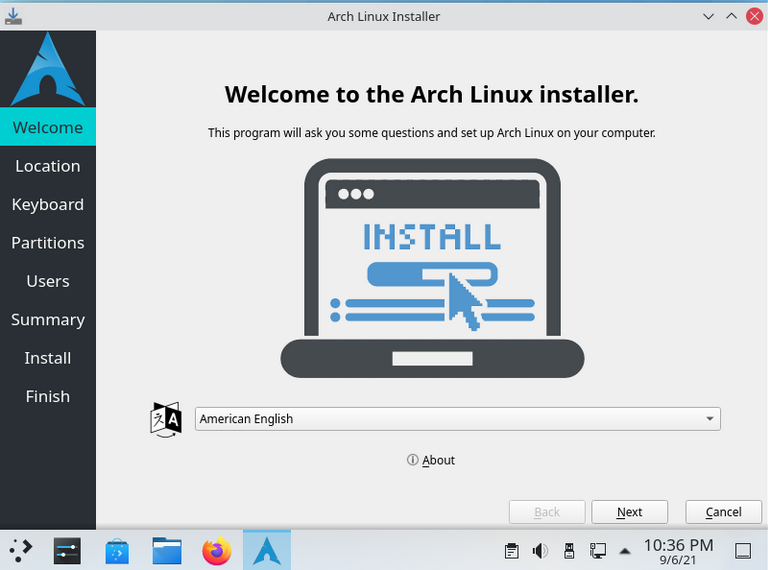
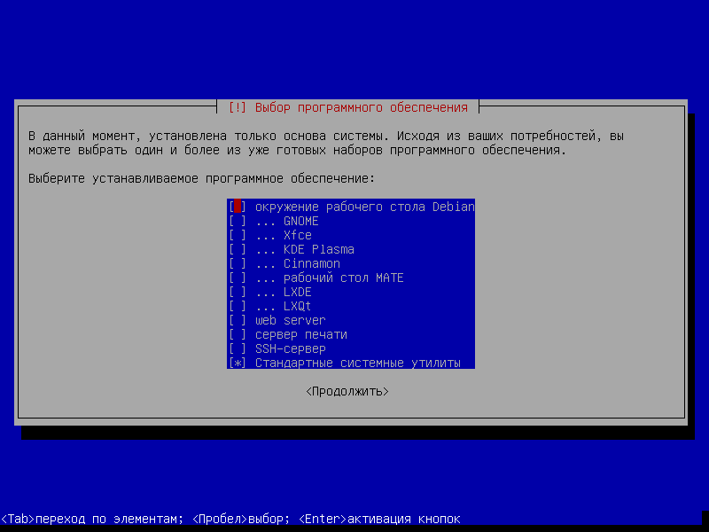
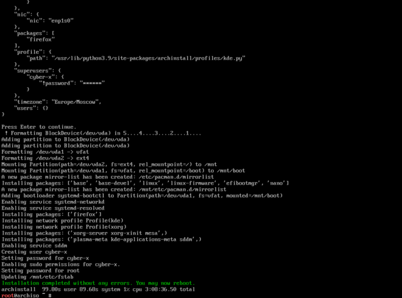

Об установке GNU/Linux
Введение
Если рассматривать тему установки операционной системы на базе ядра Linux. То стоит сказать, что этот процесс в каждом дистрибутиве это форма распространения ОС (в нашем случае на базе Linux) может происходить по-разному. В каких-то дистрах тебе достаточно запустить на флешке установочный iso термин для обозначения образа оптического диска, содержащего файловую систему стандарта ISO 9660 и там пройтись по-графическому мастеру установки. А где-то, перед установкой, надо прочитать мануал документ, назначение которого предоставить людям помощь в использовании какой-то системы , понять что есть что и потом уже приступать к установке. Не стоит этого пугаться, поскольку в интернете полно разных документаций и видео. Особенно везет популярным дистрам, у которых огромное сообщество.
Рассмотрим по-подробнее разные виды установки
1. Графическая установка дистрибутива: Отличается тем, что все происходит полностью через графический интерфейс. Является самой привлекательной. 
Преимущества:
- быстрый процесс инсталляции на современном железе
- простая для рядового пользователя
- возможность использования курсора мыши
- красивый интерфейс
Недостатки:
- возможно долгая установка на слабом железе
- не гибкая
- устанавливается лишний софт
2. Интерактивная установка дистрибутива: Такой случай можно назвать псевдо-графическим, потому-что есть некоторые визуальные элементы, по-которым не трудно ориентироваться. 
Преимущества:
- быстрый процесс инсталляции на любом железе
- простая установка для рядового пользователя
Недостатки:
- не самый красивый интерфейс
- не гибкая
- устанавливается необходимый софт
3. Консольная установка дистрибутива: Одна из самых старых и популярных методов среди ветеранов GNU/Linux. Установка очень интересная и дает массу эмоций. 
Преимущества:
- очень гибко
- устанавливаешь тот софт, который тебе нужен
- не требовательная установка на любом железе
Недостатки:
- сложно новичкам
- отсутствует графический интерфейс
Какие бывают дистрибутивы?
Дистрибутивов в цифровом мире полным полно, миллионы и миллиарды. Одни созданы огромной корпорацией, другие маленькими проектами или обычными пользователями. Каждая привлекательнее другой. Есть с графической средой (DE) desktop environment - окружение, в котором есть уже все необходимое или (WM) window manager - оконное окружение, которое является базой управления размещением и определяющая внешний вид окон . А также без нее (CLI). Любую из них можно настроить как угодно и для разных задач, если уметь правильно это делать. В таком разнообразии можно найти и то, что тебе больше всего подойдет, с помощью сайтов с фильтрами. Одним из таких можно считать DistroWatch.com